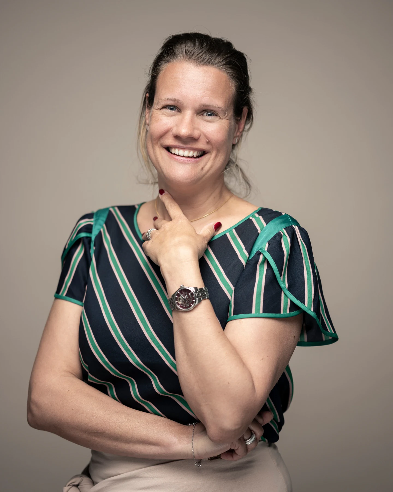

Présence
Du temps véritable et une disponibilité construite autour de la situation.
Accompagnement privé · Suisse & déplacements
Une présence réelle, confidentielle et sur mesure pour traverser une transition, retrouver du mouvement ou rester solide dans un environnement exigeant.
d’accompagnement. Demi-journée, journée complète ou plusieurs jours, selon la situation.
Certains moments ne rentrent pas dans une séance classique. Le vide arrive au premier matin de retraite. Une personne n’arrive plus à sortir de chez elle. La pression monte au cœur d’un tournage ou d’une mission. Une vie confortable ne procure plus aucun élan.
L’accompagnement privé permet de travailler dans le contexte réel, avec le temps nécessaire pour observer, remettre du mouvement, clarifier et retrouver des repères qui tiennent dans la vie quotidienne.
Du temps véritable et une disponibilité construite autour de la situation.
Un cadre confidentiel, sobre et respectueux de la vie privée, de la fonction et de l’entourage.
Pas de protocole imposé : lieu, rythme, durée et outils s’adaptent à la personne.
Situations accompagnées
Retraite, vente d’entreprise, séparation, départ des enfants, changement de pays ou de rythme.
Découvrir → 02Quand sortir, décider, retrouver une routine ou reprendre contact avec l’extérieur devient difficile.
Découvrir → 03Tournage, déplacement, événement, lancement ou période professionnelle à très forte pression.
Découvrir → 04Demi-journée, journée, immersion de plusieurs jours ou présence sur mission.
Voir les formats →
Mélanie Vonlanthen
Son parcours traverse l’hôtellerie, le milieu hospitalier, la vente et l’accompagnement. Coach formée à l’hypnose ericksonienne et spécialisée en PNL, elle a développé la méthode FIDES.
Avec aujourd’hui plus de 5’000 heures d’accompagnement, Mélanie privilégie une approche concrète, individuelle et adaptable. FIDES, la PNL ou l’hypnose sont des outils possibles — jamais une fin en soi.
Premier échange
Expliquez simplement ce qui se passe. Mélanie vous dira clairement si son accompagnement est adapté et dans quel cadre.
Prendre contact